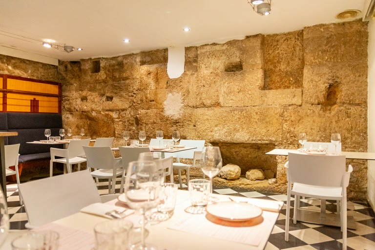
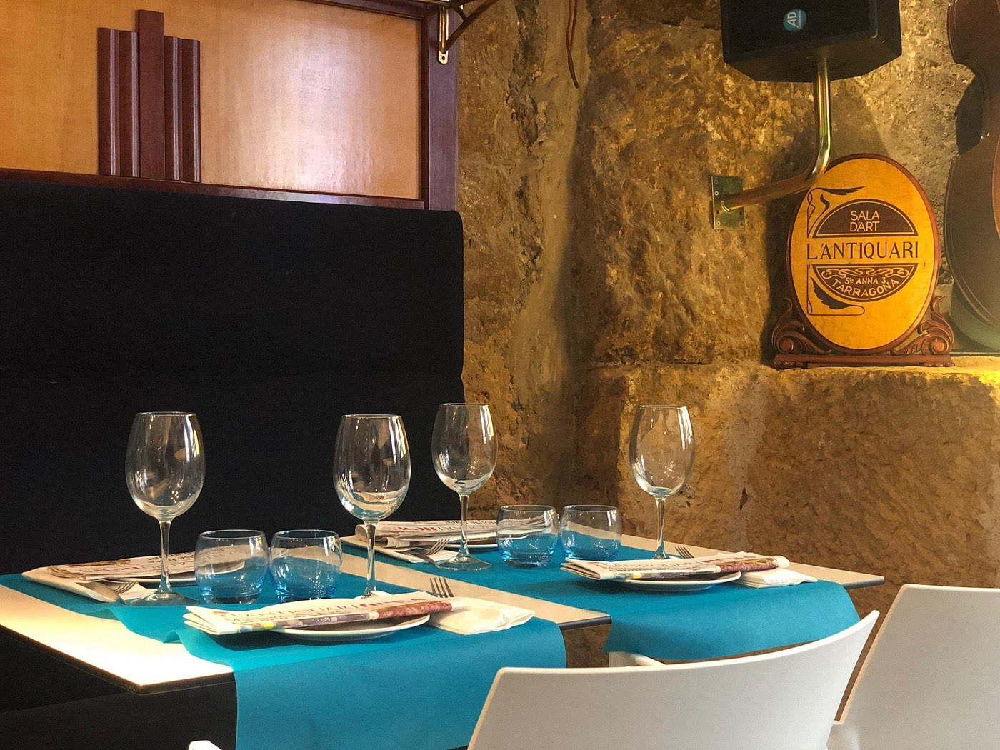
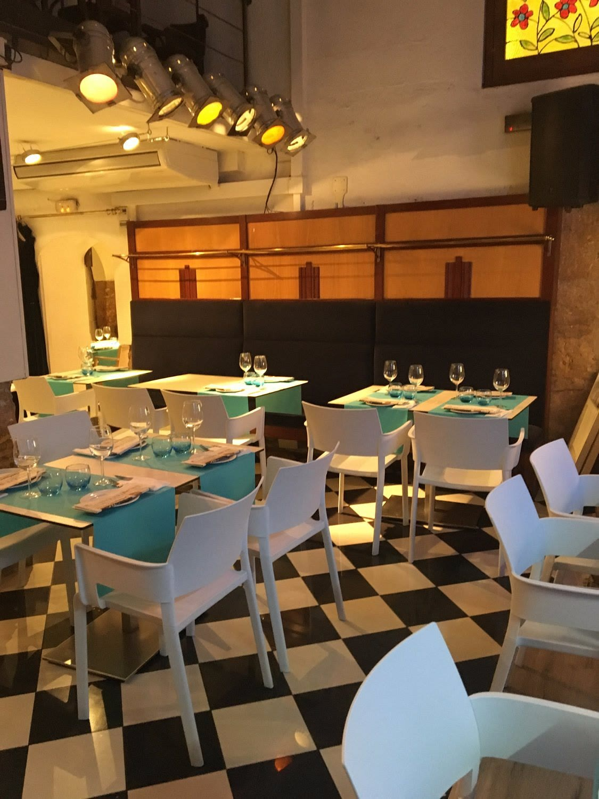
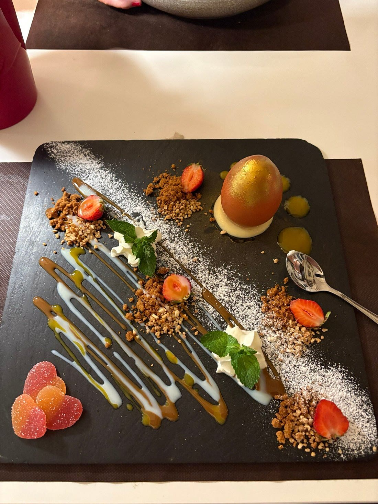
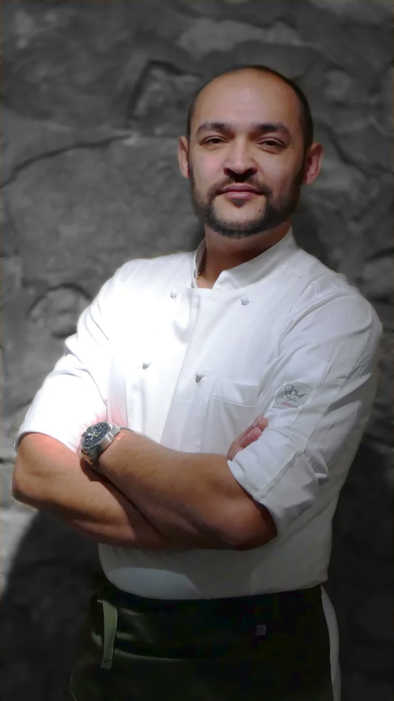

Part Alta, Tarragona



JL
Sr. José Manuel Latorre
20:30 h
20:45 h
21:00 h
23:30 h


Tymur Duka
AG
Arnau González
Newsletter
¿Quieres recibir la próxima crónica antes que nadie?
Crónicas de los restaurantes visitados, vinos recomendados y novedades del Camp de Tarragona. Cada quince días, sin ruido.
Sin spam · Date de baja cuando quieras.
También te puede interesar